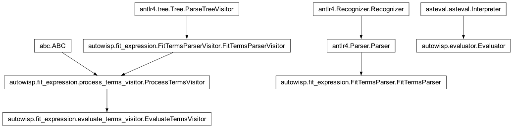
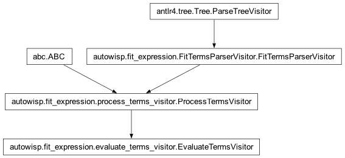

autowisp.fit_expression.evaluate_terms_visitor module
Class Inheritance Diagram

Implement visitor to parsed fit terms expression that evaluates all terms.
- class autowisp.fit_expression.evaluate_terms_visitor.EvaluateTermsVisitor(*data)[source]
Bases:
ProcessTermsVisitor
Visitor to parsed fit terms expression evaluating all terms.
- __init__(*data)[source]
Define the data used to evaluate the terms.
- Parameters:
data (numpy structured array or asteval.Interpreter) – If array, should contain fields with all variables required by the terms in the expression. If interpreter should have all these variables in its a symbol table.
- Returns:
None
- _process_term_product(input_terms, term_powers=None)[source]
Add to the current expansion the product of input terms to powers.
- _start_expansion(num_output_terms, term_length, dtype)[source]
Allocate the output array for an expannsion operation.
- visitFit_term(ctx: Fit_termContext)[source]
Evaluate the corresponding term.
- visitFit_terms_expression(ctx: Fit_terms_expressionContext)[source]
Return all terms defined by the term expression.